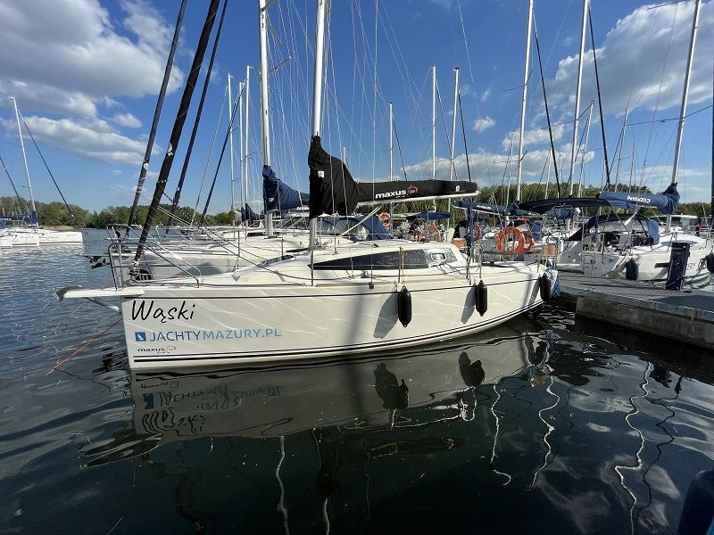

Maxus 24 Evo„Wąski”
- Miejsca
- 6 + 2
- Kabiny
- 0
- Zanurzenie
- 0,32 / 1,35 m
- Rok produkcji
- 2020
Długość całkowita8,20 m
Cena od300 zł / doba

Jachty żaglowe · 1 jednostka
od 300 zł / doba
Maxus 24 EVO to jeden z najpopularniejszych jachtów żaglowych kabinowych w segmencie 24 stóp. Model łączy bardzo dobre właściwości nautyczne z funkcjonalnym wnętrzem i kompaktowymi wymiarami. To jednostka turystyczna z wyraźnym sportowym charakterem.
Poniżej znajdziesz szczegółowe informacje: dane techniczne Maxusa 24 EVO, wymiary, wnętrze, koje, ilość osób oraz orientacyjną cenę.
Najważniejsze parametry modelu:
Te dane techniczne sprawiają, że jacht Maxus 24 EVO jest stabilny i przewidywalny nawet przy silniejszym wietrze. Jednostka dobrze reaguje na ster i zachowuje dobrą kontrolę pod żaglami.
Pod względem proporcji Maxus 24 EVO wymiary ma bardzo dobrze zoptymalizowane. Szeroki kadłub zapewnia wygodną przestrzeń w mesie oraz komfortowy kokpit dla całej załogi.
Dzięki szerokości 2,55 m jacht oferuje odczuwalny komfort w środku, mimo że długość nie przekracza 7,5 metra. Stosunkowo niewielkie zanurzenie umożliwia bezpieczne pływanie po płytszych akwenach.
Maxus 24 EVO wnętrze zostało zaprojektowane z myślą o kilkuosobowej załodze. W standardowym układzie znajdziemy:
Maxus 24 EVO to żaglówka, w której środek jest jasny i funkcjonalny. Wysokość w kabinie do 1,88 m pozwala większości dorosłych osób swobodnie funkcjonować podczas postoju. Układ wnętrza umożliwia komfortowe użytkowanie.
Jedno z najczęściej zadawanych pytań brzmi: Maxus 24 EVO ile osób pomieści?
Standardowo jacht oferuje maksymalnie 6 stałych miejsc do spania z możliwością zwiększenia do 8 przy wykorzystaniu mesy.
Układ koi obejmuje:
Realny komfort zapewnia załoga 4-6 osób. Przy maksymalnej obsadzie przestrzeń jest wykorzystana w pełni, ale nadal funkcjonalna na wakacyjny rejs.
Maxus 24 EVO czarter to bardzo popularny wybór na Mazurach. Jacht sprawdza się zarówno podczas krótkich weekendowych wypadów, jak i tygodniowych rejsów rodzinnych. Jednostka jest dostępna do wynajęcia od zaraz w naszym porcie Stanica Wodna Stranda w Giżycku.
To model stabilny, bezpieczny i jednocześnie dynamiczny pod żaglami. Dzięki kompaktowym wymiarom jest stosunkowo łatwy w manewrowaniu w portach. Podobnie jak inne jednostki tego typu. Sprawdź nasze jachty żaglowe “z rodziny Maxus”:
Maxus 24 EVO “Wąski”
Maxus 28 “Prawy Hals”
Cena czarteru uzależniona jest od sezonu, standardu wyposażenia i długości rejsu.
W sezonie wysokim stawki są wyraźnie wyższe niż w maju, czerwcu czy wrześniu. Pełen cennik jachtów Maxus 24 EVO dostępnych w naszej flocie znajduje się w zakładce cennik. Kwoty obowiązują przy czarterze tygodniowym, natomiast przy krótszych lub dłuższych wynajmach ceny ustalane są indywidualnie.
Jeśli szukasz jachtu:
Maxus 24 EVO będzie rozsądną i sprawdzoną opcją.
Podsumowując, Maxus 24 EVO to model, który dobrze sprawdza się zarówno przy wypadzie pasjonatów żeglarstwa, jak i podczas rodzinnego tygodnia na Mazurach. Sztywny kadłub i odpowiednio dobrane ożaglowanie sprawiają, że jednostka jest przewidywalna. nie wymaga od sternika ciągłej walki i jest stablina. To ważne szczególnie wtedy, gdy na pokładzie są osoby z mniejszym doświadczeniem żeglarskim.
Sprawdź, które jachty są wolne, albo zadzwoń do biura.